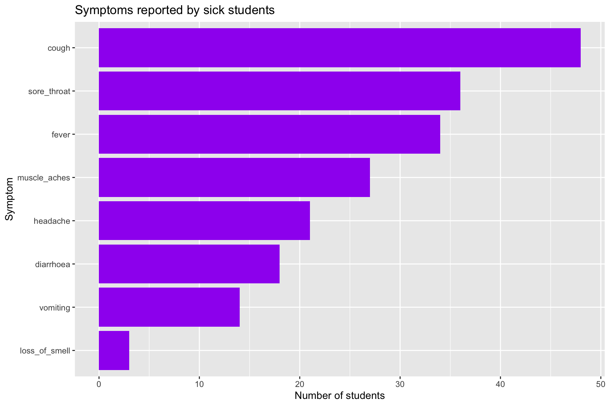
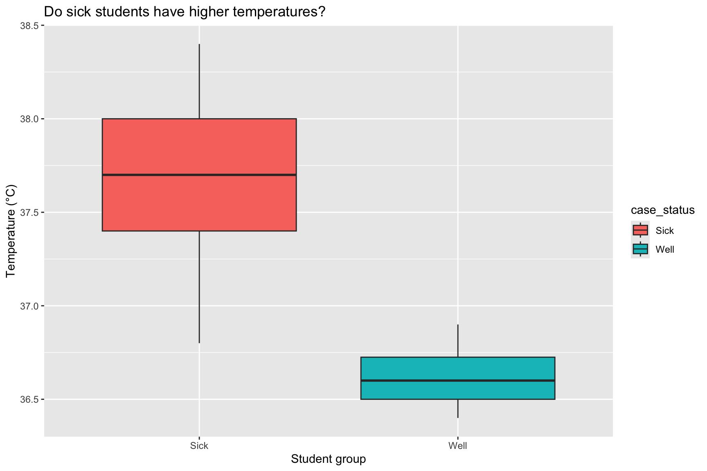
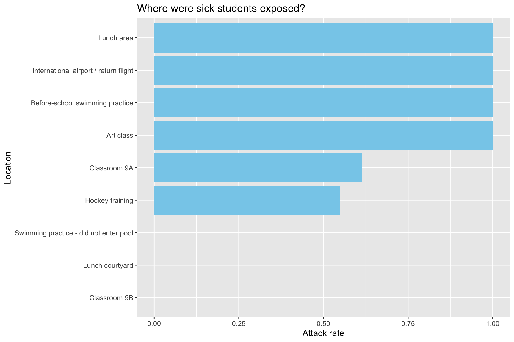
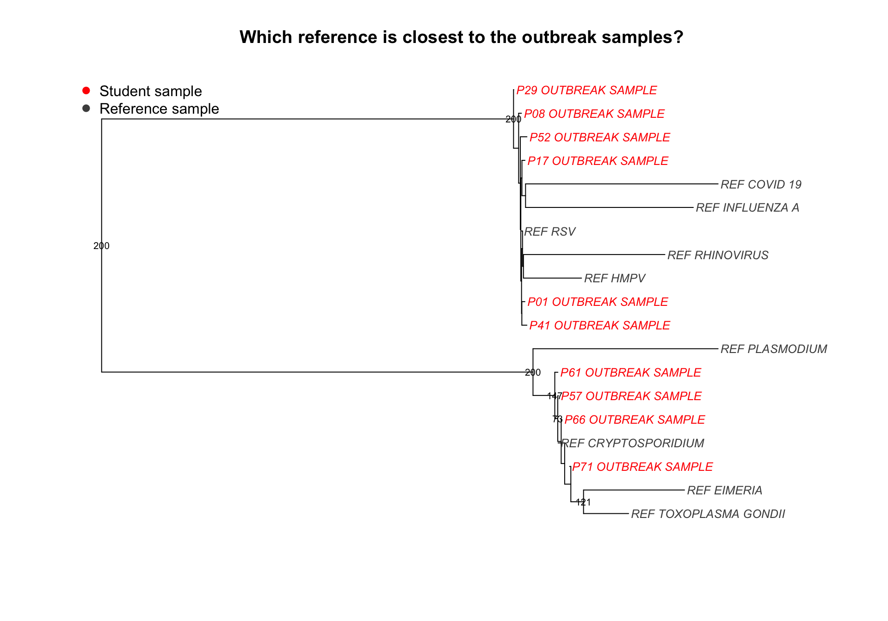
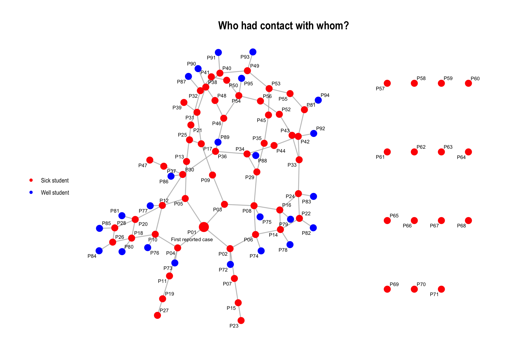

Outbreak Detectives: Can You Stop the Spread?
Emergency Alert
Several local hospitals have reported an unusual increase in sick students from the same school.
Students from two classrooms have presented with a range of symptoms, and the number of cases is continuing to grow.
Your team has joined the Global Outbreak Investigation Unit.
Your job is to work out what is happening.
Do not diagnose the outbreak yet. Follow the evidence.
Possible causes include:
- Influenza A
- COVID-19
- Zombie Virus A
- Malaria
- RSV (Respiratory syncytial virus)
- Rhinovirus
- Human metapneumovirus (HMPV)
- Toxoplasmosis
Your job is to follow the evidence.
1. Hospital records have arrived
First, open the patient file.
Take a look.
| patient_id | first_name | class | age | sex | temperature_c | hours_to_symptoms | hospitalised | case_status | fever | cough | sore_throat | headache | muscle_aches | vomiting | diarrhoea | loss_of_smell | bleeding | confusion |
|---|---|---|---|---|---|---|---|---|---|---|---|---|---|---|---|---|---|---|
| P01 | Alex | 9A | 16 | female | 37.3 | 72.0 | YES | SICK | yes | Y | No | YES | yes | N | No | NO | no | N |
| P02 | Amelia | 9A | 13 | F | 37.8 | 121.0 | yes | sick | Y | Yes | NO | yes | N | No | NO | no | N | No |
| P03 | Ari | 9A | 15 | male | 37.5 | 191.3 | N | yes | No | YES | yes | Y | Yes | YES | no | N | No | NO |
| P04 | Bailey | 9A | 13 | Female | 38.3 | 109.7 | No | Sick | YES | yes | Y | Yes | YES | no | N | No | NO | no |
| P05 | Charlie | 9A | 14 | male | 37.7 | 124.9 | YES | SICK | yes | Y | Yes | NO | no | N | No | NO | no | N |
| P06 | Chloe | 9A | 13 | Male | 37.4 | 180.7 | yes | sick | Y | Yes | NO | no | N | No | NO | no | N | No |
What do you notice?
- What does one row represent?
- What information do we have about each student?
- Can you spot anything messy?
2. Clean the data
The hospital entered the records very quickly.
For example:
Yes, YES, yes and Y
all mean the same thing.
Instead of fixing every value ourselves, we can use a function.
Did it work?
Why clean data?
Computers need us to be consistent.
If "Yes" and "YES" are written differently, R may think they are different answers.
3. How many students are sick?
Now look at the students with the highest temperatures.
Your turn
What do you notice about their temperatures?
4. What symptoms are most common?
| symptom | n |
|---|---|
| cough | 48 |
| sore_throat | 36 |
| fever | 34 |
| muscle_aches | 27 |
| headache | 21 |
| diarrhoea | 18 |
| vomiting | 14 |
| loss_of_smell | 3 |
Now make a graph.

Try editing the graph
Change "purple" to another colour and run the code again.
You can also change the words inside title =, x = and y =.
Think like a disease detective
Which symptoms stand out?
Does this help rule out any diseases?
5. Do sick students have higher temperatures?

Try editing the graph
Inside aes(), change:
to:
What changes?
What do you notice?
Compare the middle of the two boxplots.
6. How quickly did students become sick?
The time between being exposed and becoming sick can be an important clue.
7. New evidence: locations
A second file has arrived.
We need information from both files.
Now find the locations with the most illness.
| location | students | sick | attack_rate |
|---|---|---|---|
| Before-school swimming practice | 15 | 15 | 1.0000000 |
| Lunch area | 15 | 15 | 1.0000000 |
| Art class | 10 | 10 | 1.0000000 |
| International airport / return flight | 1 | 1 | 1.0000000 |
| Classroom 9A | 31 | 19 | 0.6129032 |
| Hockey training | 20 | 11 | 0.5500000 |
| Classroom 9B | 12 | 0 | 0.0000000 |
| Lunch courtyard | 24 | 0 | 0.0000000 |
| Swimming practice - did not enter pool | 15 | 0 | 0.0000000 |
And plot them.

Try editing the graph
Change "skyblue" to "orange", "green" or another colour.
Then try changing the graph title.
What does this tell us?
Does one location or activity stand out?
Could there be more than one explanation?
8. Make a preliminary diagnosis
Open the disease clue sheet.
| disease | fever | cough | vomiting | diarrhoea | confusion_or_bleeding | typical_onset | common_exposure |
|---|---|---|---|---|---|---|---|
| RSV (Respiratory syncytial virus) | Low / possible | Very common | Uncommon | Rare | Rare | 2–8 days | Close respiratory contact; classrooms, lunch, activities |
| Human metapneumovirus (HMPV) | Possible | Common | Possible | Rare | Rare | 3–6 days | Respiratory spread |
| Influenza A | High | Common | Sometimes | Uncommon | Rare | 1–4 days | Respiratory spread |
| COVID-19 | Possible | Common | Sometimes | Possible | Rare | 2–5 days | Respiratory spread |
| Rhinovirus | Usually low | Common | Rare | Rare | Rare | 1–3 days | Respiratory spread |
| Cryptosporidiosis | Possible | Rare | Common | Very common | Rare | 1–12 days; average ~7 | Contaminated swimming pool water |
| Toxoplasmosis | Possible | Rare | Rare | Rare | Rare | Variable | Food, soil or cat faeces |
| Eimeriosis | Variable | Rare | Possible | Possible | Rare | Variable | Primarily animal-associated parasite |
| Malaria (Plasmodium spp.) | Common | Rare | Possible | Possible | Possible | Usually 7+ days | Mosquito exposure |
Before you see the laboratory results, decide:
- What disease do you think is spreading?
- What evidence supports your answer?
- Is there anything unusual about two of the sick students?
9. Breaking News: sequencing results
Patient records have arrived from several hospitals.
The records were assembled quickly by different staff members, so some values may be written inconsistently.
Most of the students who became sick have visited hospital at some stage during the investigation.

Read the tree
- Which reference is closest to most of the student samples?
- Do all of the student samples belong to the same group?
- What do you notice about P29 and P30?
A tree can tell us which samples are genetically similar.
It cannot prove exactly who infected whom.
10. Contact tracing
Interviewers have now told us who spent time together.
How many separate groups are in the contact data?
Now draw the network.

Investigate the network
- Are most sick students connected?
- What is unusual about P29 and P30?
- Why might some connected students still be well?
- Does a connection prove that infection occurred?
11. Final diagnosis
Your team must now give the outbreak response team its answer.
Main outbreak
What is the most likely disease?
Give three pieces of evidence
You could use:
- symptoms
- time to illness
- locations
- sequencing
- contact network
The bigger lesson
Real outbreak investigations combine different types of evidence.
No single graph gives us the whole answer.
Today you used:
data + coding + epidemiology + genomics + networks
to solve an outbreak.

R-Ladies+ Melbourne | rladies.org